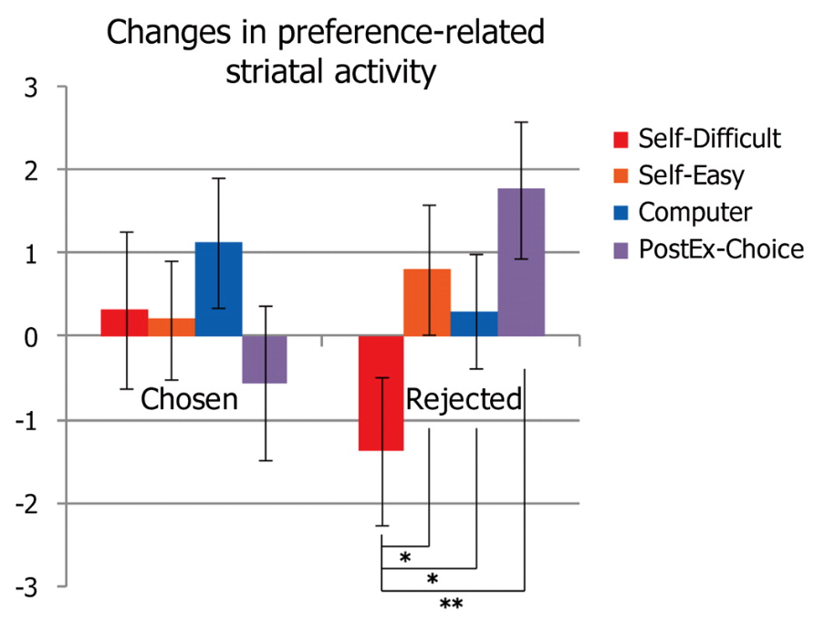
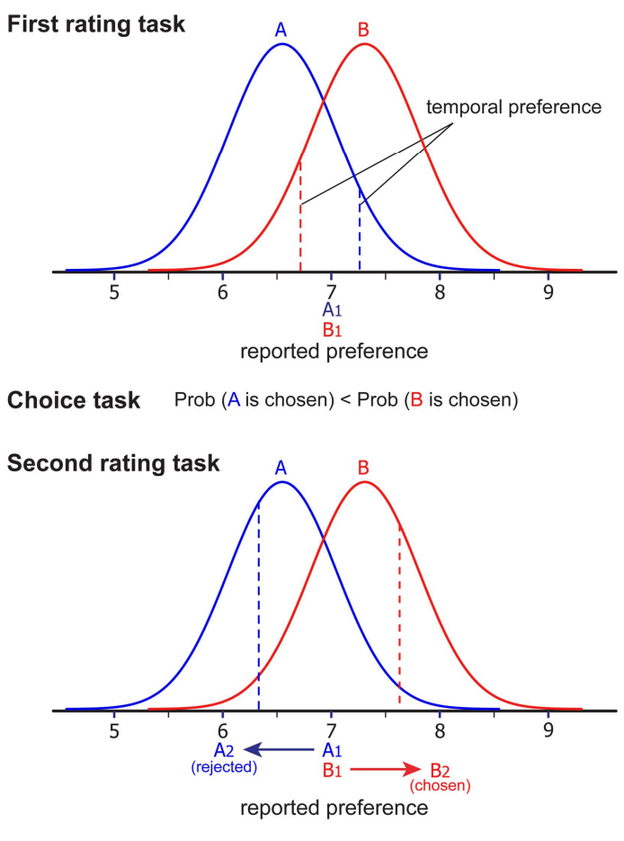
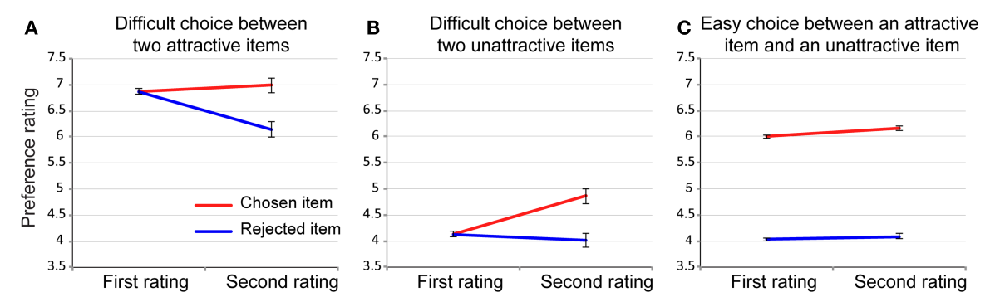
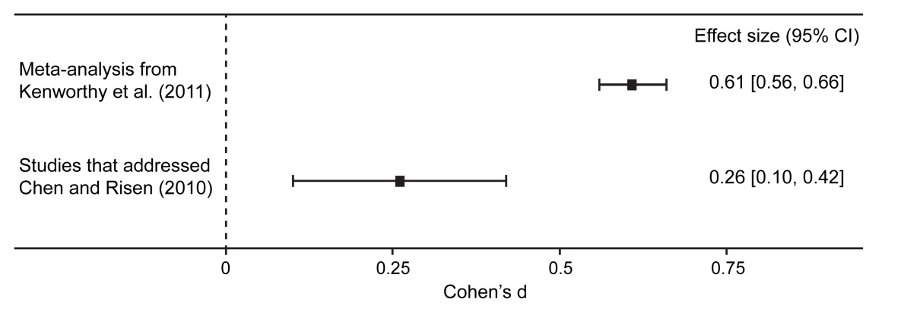
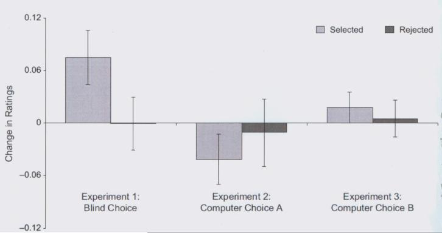
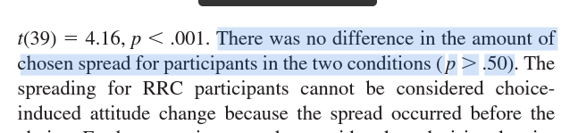
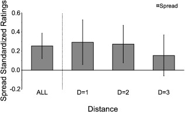

目次
Cognitive Dissonance Theory(CDT)とは、人間の態度の変化を説明する理論である。CDTによると、人はある対象に対して対立する態度をもつとき（i.e., 認知的不協和状態にあるとき）、耐え難いほどの不快な感情を抱く。その不快感情を解消するため（あるいは自己の一貫性を保つため）に、人はその対象に対する行動や信念といったイメージを変化させ、結果的に態度を変化させるとするのがCDTである。ただし、一般的に行動を変化させるのは困難であり、たとえ可能であったとしても信念を変化させるほうが容易なので、人間は主として信念を変化させると考えられる。たとえば、喫煙者は喫煙に対して「喫煙をしている」行動と「喫煙は健康に悪い」認知という２つの対立した態度を持っている（態度は感情的成分、行動的成分、認知的成分で分類されると言われているため、行動と認知とした）。このとき喫煙者は自己の一貫性を保つため（i.e., 認知的不協和を解消するため）に、どちらかを変化させる。喫煙行動は認知に対して変化させるのが困難なので、喫煙者は「喫煙をすることによってストレスが解消される」と考える。上記のようなプロセスによって人間は態度を変化させるとするのが、CDTである。
CDTに関する実証研究は、CDTが提唱されて以来60年ほど行われており、中でもchoice-induced preference change(選択による選好の誘導？)は繰り返し再現されている(実験研究では、e.g., Brehm, 1956; Gerard & White, 1983; Steele et al., 1993 fMRI研究では、e.g., Sharot et al., 2009, 2012; Jarcho et al., 2011; Kitayama, et al., 2012)。Izuma et al. (2010)は、参加者に対して160個の食品(e.g., チップスター、オレオ)に対する好みを8段階（1＝全く好きでない、8＝とても好き）で評価させた(first rating task)後に、160の食品から2つの食品を提示させ、どちらが好ましいかを回答させた(choice task)。なお、choice taskの際、被験者内でコンピューター条件(赤枠で囲まれた方を選択してください)と自己選択条件(自分の好みの方を選択してください)の2つの条件が設定された。choice taskの後、被験者は160の食品がその食品の評価(コンピュータが選んだ or 拒否した、もしくはあなたが選んだ or 拒否した)と一緒に提示され、その食品について評価を行った(second rating task)。その結果、被験者の線条体(報酬が与えられたときに賦活する部位。機能的特異性も一貫性も高い)の活動は選好評定値の差が0もしくは1の食品に対して自分が拒否したとき、抑制された（下図参照）。

Izuma et al. (2010)でも用いられている実験手続きは自由選択パラダイムと呼ばれ、CDTを検証する実験手続きとして最も頻繁に利用されてきたパラダイムである。しかし、自由選択パラダイムの手続きに重大な問題があることが指摘されている(Chen & Risen, 2010)。以下ではまず、自由選択パラダイムの手順を示し、Izuma & Murayama (2013)をまとめることで自由選択パラダイムの何が問題であり、その問題が過去の知見にどれほどの影響を与えるのかについて示す。その後、Chen & Risen (2010)が妥当であると示したパラダイムとそれを実施した研究、およびその他のパラダイムを、それぞれのメリット、デメリットと共に紹介する。
自由選択パラダイムとは、以下の手順に従って実施される実験パラダイムである。
多くの研究によって、first rating taskとsecond rating taskのアイテムiに対する選好uiはchoice taskで選択された（あるいは拒否された）かどうかによって変化することが示されている。このような経験的(empiricalな)証拠だけでなく、メタ分析によっても選択による選好の変化が存在することが示されており、Kenworthy et al., (2011)によると、その効果量はd = .61[.56, .66]であった。
自由選択パラダイムは数多くの研究で行われてきたが、クリティカルな問題が存在することも指摘されている(Chen & Risen, 2010)。その問題とは、このパラダイムでは、選択による真の選好の変化を測定できていないという問題である。Chen & Risen (2010)は数学的方法によって、たとえ選好が変化せずとも、選好の回答が変化することは示されている（原典は確認しましたが難しすぎたのでよくわからず。数学の定理として証明できるとのこと）。
本研究では、コンピューターシミュレーションによってC&Rの知見が正しいかを検証した。具体的には以下の条件で実施した。

Izuma & Murayama (2013)より引用

uAとuBの平均値の差が2ある時のみ、交互作用効果(choice-induced preference change)はなかった。
C&Rでは、適切なパラダイムも提唱されている。それは以下の３つである。これらのパラダイムの問題点、および具体的な手順や実際の実験例は後述する。
Kenworthy et al. (2011)では、自由選択パラダイムの研究が多く含んだメタ分析であった。そのため、コンピューターシミュレーションの結果のように、選択による選考の変化を過大に見積もっている可能性がある。そこで、本研究ではKenworthy et al. (2011)の結果が過大に見積もられているかを検証するため、C&Rで提唱されたパラダイムのみを対象にしてメタ分析を実施した。

本研究において推定された効果量がKenworty et al. (2011)よりも小さいこと（および、信頼区間の幅が増加していること）からわかるように、自由選択パラダイムは、選択による選好の変化を過大に推定していると考えられる。本研究のコンピューターシミュレーションやメタ分析の結果から、今後のCDT研究において自由選択パラダイムを用いることは避けたほうが良いだろう。
この研究の結果は、自由選択パラダイムを用いた過去の知見の妥当性が高くないことを示唆している。一方で今回の議論（批判）は、自由選択パラダイムだけにとどまらず、例えば個人差()や文化差()を対象とした研究、さらにはIAT()、脳活動()を測定した研究の妥当性にも疑問を投げかけるものである。また、C&Rにも以下のような問題点がある。
この研究の結果は、今後のCDT研究において自由選択パラダイムは避けたほうが良いこと、より妥当な検証方法を探索していくこと、そして結果の解釈においてはより慎重になることの重要性を示唆している。なお、今回の知見は認知的不協和による選好の変化を否定するわけではなく、(C&Rでは存在について言及されてはいないが、)むしろ存在することを示していることは注意されたい。
ここまでは、Izuma & Murayama (2013)の指摘をまとめることで、自由選択パラダイムの問題点を明らかにし、代替的な実験方法の探索と採用が重要であることを示してきた。以下ではIzuma & Murayama (2013)が妥当であると考えるパラダイムの手順、実際の実験例、自由選択パラダイムの問題点を改善している点(メリット)および問題点(デメリット)についてまとめる。
Blind Choice Paradigmとは、以下の手順で実行されるパラダイムのことである。
以上の手順を行うメリットは、「選択による選好の変化」だけを測定している点である。竹澤 (2018)が指摘しているように、自由選択パラダイムの問題の一つは、first rating taskにおけるアイテムへの評価は真の選好を反映しているという、現実的でない仮定をおいていることである。そのため、自由選択パラダイムによる評価の変化は、「choice taskは元々の選好の差を明確にしただけである」という反論には適切な回答を出せない。一方で、Blind Choice Paradigmは、真の選好を無意味なものにする、あるいは選んだ対象をわからなくする(Egan et al., 2007)ことで「choice taskは、元々の選好に関係なく、選択の効果のみを反映できる」ことが手順上のメリットとなる。一方で、このパラダイムではそもそも真の選好を正確に測れていない可能性が指摘されているため(Risen & Chen, 2010)、完全な手法とは言えない。次のパラグラフでは、Blind Choice Paradigmを用いた実験例を示す。
Blind Choice Paradigmを実施した研究として、Sharot et al. (2010)がある。Sharot et al. (2010)では、80の休暇先(e.g., )を刺激として用いている。実験手順としてはまず、選択前評価課題(first rating task)が行われた。このセクションでは最初に休暇先の名称が6秒間画面に表示された。参加者はその間、「来年の休暇をその場で過ごすことを想像するよう」指示された。その後、2秒間でどの程度幸せか(1-不幸、2-少し不幸、3-中立、4-幸せ、5-非常に幸せ、6-非常に幸せ)を回答させ、残りの三秒間は固定十字を提示した。この1回あたり11秒間の試行を80回行うことで選択前評価課題を終えた。次にサブリミナル意思決定課題(Blind choice task)が行われた。この課題ではまず、無意味な文字列(e.g., “%^!x *&()%)を2msだけ、画面の右と左に提示する。その後、2つの休暇先についての文字が提示され、「どちらの休暇先(右の休暇先か、左の休暇先か)が良いか」を選択させた。ただし、ここでも旅行先についての文字列は提示していない。被験者が選択したあと、ランダムに休暇先の組を提示して(e.g., ギリシャ - タイ)、被験者が押した方向の休暇先に星マークをつけた。最後に、選択後評価(second rating task)を選択前評価と同様に実施した。その結果、被験者は盲目的（i.e., 選好を反映していない）にもかかわらず、選択した方の選好がfirst rating taskよりも高くなったが、拒否した休暇先についてはfirst rating taskと変わらなかった。

Rate-Rate-Choice Paradigm(Rank-Rank-Choose Paradigm)とは、以下の手順で実行されるパラダイムのことである。
以上の手順を行うメリットは、選択による選好の変化が、評価によるエラーを受けるのかどうかを検証できる点である。RRCは自由選択パラダイムにおける統制条件として用いられてきたものの、差に関する有意差(i.e., first と secondの評価の差)を検証する目的ではなく、実験操作を似たものにすることを目的として実施されてきた。しかし、Chen & Risen (2010)が行ったように、差に関する有意差を検証することで「選択による選好の変化が、偶然のエラーや時間経過の効果を統制してもなお生じるものなのか」について判断可能となる。一方で、このパラダイムではそもそも選好による変化を検出できないため(Risen & Chen, 2010, p > .059; Chen & Risen, 2010, p > .50)、選好による変化が存在する場合、十分な検出力が得られない手法であるという欠点がある。次のパラグラフでは、Rate-Rate-Choice Paradigmを用いた実験例を示す。
Chen & Risen (2010)は、Rate-Choice-Rate Paradigm(i.e., 自由選択パラダイム)が選択による選好の変化、及び選択の認知的不協和を生じさせなくてもfirst rating task とsecond rating taskに差が出ることを数学の定理として証明したあと、Rate-Rate-Choice Paradigmによる実験を実施した。実験はまず、参加者に対してはがきサイズの絵を15枚渡すことことから開始された。参加者は自分の選好に従って15枚を順位付けした。この際、最も好きな絵が一番左端、最も好きでもなく所有したくもない絵を右端に置くよう指示し、残りを順位にそって並べるよう指示された。実験者が順位を記録したあと、今度は絵の中からペアを選んでもらい、それぞれのペアについて、自分が気に入り、所有したいと思うほうの絵を選ぶように言われた。また、実験の最後に、選んだプリントのうち1枚を原寸大のポスターにしてプレゼントするので、慎重に選ぶようにと、実験者は参加者に言った。
この選択の際に、参加者は2つの条件(RCR vs. RRC)に分けられた。RCR条件では、参加者は5組新しいの絵+first rating taskで7位と9位と評価した絵(合計6組)の中からそれぞれの好きな絵を1枚(計6枚)選ぶように指示された。RRC条件では、参加者は6組の新しい絵の中からそれぞれ魅力的な1枚(計6枚)を選択した。選択後、参加者は最初に選んだ版画を以前と同じように1位から15位まで再順位付けするように言われた。その際、記憶力テストではないので、その時に最も気に入ったものを選ぶよう指示された。
この操作で重要なのは、RRCとRCR条件において、R-R間で7位と9位の評価が変化するかどうかである。もし、どちらも同様の変化しか見られないのであれば、選択による選好の変化は観測されないことになる。一方で、RRCにおけるR-R間での評価の増加よりも、RCRにおけるR-R間の評価の増加のほうが大きい場合、選択による選好の変化が生じていると考えられる。この増加の程度に変化があるかを比較したところ、変化量に差はなかった(p > .50)。

Implicit Choice Paradigmとは、以下の手順で実行されるパラダイムのことである。
以上の手順を行うメリットは、直接比較による余分な効果を統制できることである。今までの自由選択パラダイムでは、R1でa = bとされた評定がR2でどう同変化するかを測定したため、例えば真の選好がa = 6.5, b = 7.5であるにも関わらず、a = 6, b = 8となる可能性がある。一方でこのパラダイムではh > aとb > lという情報をもとに、a = bと推定する(直接比較しない)ことでChoiceによる効果のランダム性を減らしている(直接比較の余計な効果を統制)のである。しかし、この手法ではImplicit Choice ParadigmはChoiceによるバイアスを完全に避ける事はできないことも指摘されている(Izuma & Murayama, 2013)(例えば、被験者の真の選好がh = a = b = lであった場合、h > a, b > lと選択することによるバイアスは回避不可能である)
基本的にはSharot et al. (2010)の実験手順に従ったが、時間的プレッシャーの影響を避けるため、評価の時間は20s(Sharot et al. (2010)では2s)とし、刺激自体は閾下提示せずに、左右の休暇先の組のうち、どちらが良いかを選択させた。この実験の一番の特徴は、直接比較した対象の評価の差を計測するのではなく、比較を繰り返すことで参加者の真の選好順序を推定し、比較することである。例えば、選択肢が{$a, b, h, $}の4つ存在し、それぞれの真の選好が$h > a = b > lだったとする。アルゴリズムによって選択肢が重複しないよう注意しながら参加者にh > aとb > lという情報を回答させると、直接比較せずにa = b$という結果が予想できる。このパラダイムを実施した結果、Alós-Ferrer, et al. (2012)は、Chen & Risen (2010)の指摘を回避した上で選択による選好の変化が存在することを示した。

本稿では、認知的不協和を測定するパラダイムについて、具体的な研究例とともに紹介した。最初に認知的不協和理論について概説したあと、これまで多くの認知的不協和の測定に使われてきたパラダイムである、自由選択パラダイムには重要な欠陥があることを、Izuma & Murayama (2013)の論文をまとめることで示した。その後、Izuma & Murayama (2013)がメタ分析の対象となり、自由選択パラダイムの問題点を適切に対処しているとされている3つのパラダイム(Blind Choice Paradigm, Rate-Rate-Choice Paradigm, Implicit Choice Paradigm)について、それぞれの手順、メリットおよびデメリット、そして実際の研究手順と結果を示した。
本稿を作成するのは、正直、とてつもなく大変であり、何度も統計の勉強に逃げかけた。というか、実際に何度か逃げて、メタ分析できるRパッケージを探したり、文献レビューを効率化してくれるソフト(Rayyan)を見つけたり、ベイズファクターを計算するにはブリッジサンプリングが必要なのかぁと思ってSlideShareを漁っていたりした。しかし、本稿を執筆しているのは東大院試 2週間前であり、新規学習は1週間しか猶予のない状況であったため、寄り道しながらも必死になって仕上げた。本稿は結局、1万文字を超える原稿になったわけだが、もうこれだけやって院試で不合格になるのなら、それはもう落とすほうがおかしい。
私の院試対策時間は、（今年に入る前から週40時間学習しているので）合計勉強時間は1500時間を超えている。そして三船先生の偉大なご指導と、類まれなる運の良さで英語の査読付き論文だって1st & コレスポで出した。提出した計画書は東大の博士に「面白い」と言ってもらえたし、改訂のバージョンは20を超えた。なんなら今読んでも、自分で面白いと思う。ベイズ統計だってRでモデリングしてMCMCを走らせられるし、ベイズファクターだって算出できる。年明けからコツコツ始めたAbstractまとめは500本を超えた。院試のために読んだ本を積み上げれば自分の身長を超えるし、中学生の時テストで30点を取った英語ですら、今では受験最難関の精読参考書（ポレポレ）を理解しながら解けるようになった。英語の論文だって、先生から「よく読めてる」と褒められるくらいには読めてる。もう本当に、よく頑張った。もう落ちてもいい。落ちたくないけど、落ちても諦めがつくほどに頑張った。もう、いいのではないろうか…勉強から開放されてもいいのではないだろうか…と、思いつつ、残り2週間だけすからね…頑張ります…応援よろしくお願いします